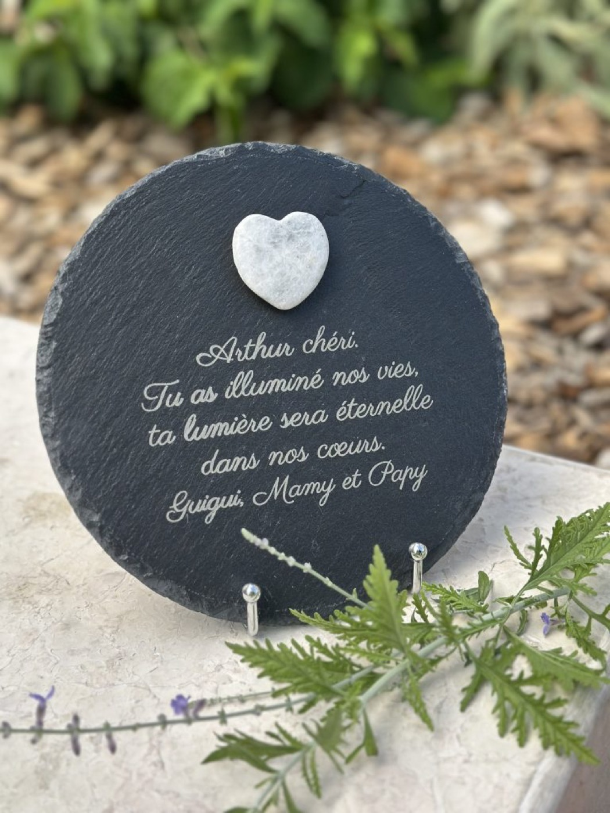
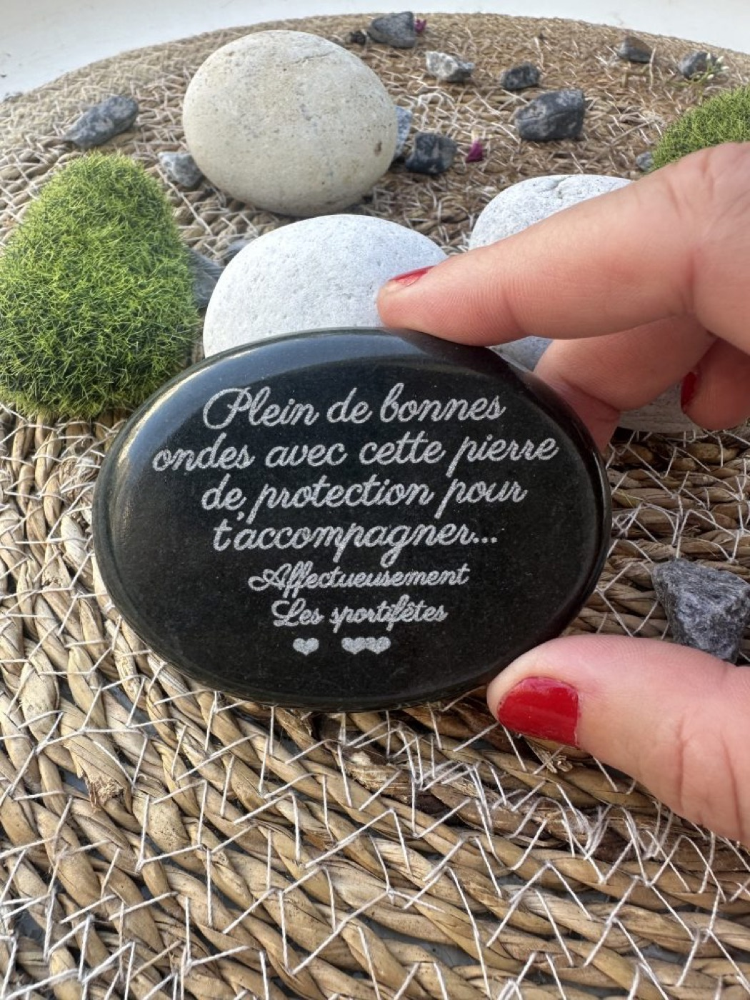
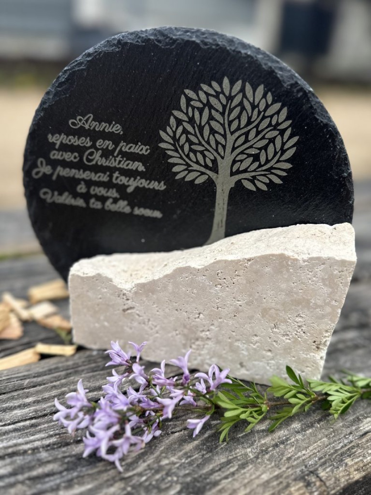
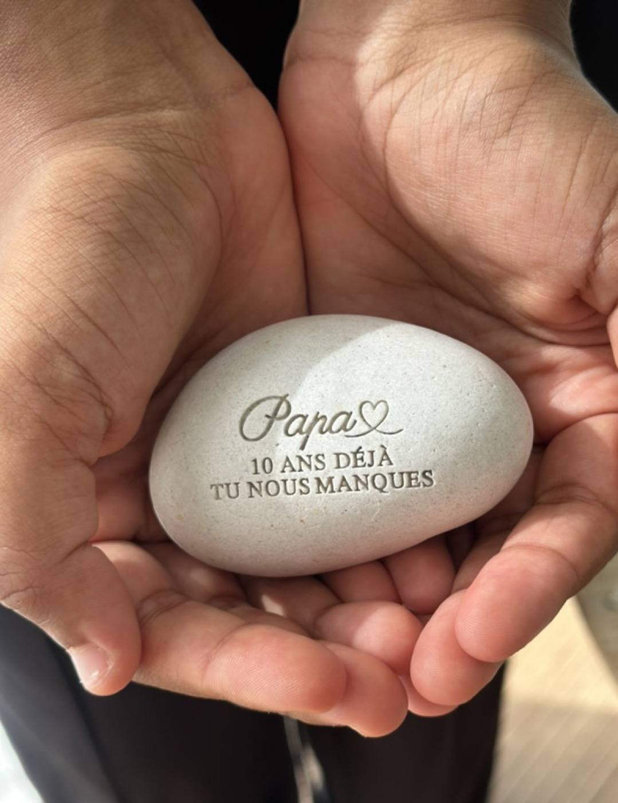

Lorsqu’on souhaite rendre hommage à un proche disparu, on recherche souvent un objet à la fois personnel, élégant et durable. La pierre naturelle s’impose alors comme un choix particulièrement symbolique : elle évoque la force, le temps et la permanence du souvenir.
Mais entre ardoise, basalte, travertin ou galet, quelle pierre choisir pour une plaque funéraire extérieure ?
L’ardoise : sobre et intemporelle

L’ardoise est appréciée pour son aspect naturel, élégant et discret. Sa teinte sombre permet de mettre particulièrement en valeur une gravure personnalisée : prénom, dates, message, citation ou symbole.
Chaque morceau d’ardoise possède ses propres nuances et irrégularités, ce qui rend chaque création unique.
Elle convient parfaitement à celles et ceux qui recherchent un hommage funéraire naturel et sobre, loin des plaques traditionnelles.
Le basalte : une pierre authentique

Issu de la roche volcanique, le basalte possède un aspect brut et minéral très particulier.
Sa couleur sombre et sa texture naturelle donnent beaucoup de caractère à une création funéraire. C’est une matière idéale pour réaliser un objet commémoratif contemporain et authentique.
Chez L’Atelier Inspiré, le basalte peut notamment être associé à l’ardoise pour créer des compositions originales.
Le travertin : douceur et lumière

Avec ses tons clairs et ses nuances naturelles, le travertin apporte une atmosphère plus douce et chaleureuse.
Cette pierre est particulièrement intéressante lorsqu’on souhaite créer un hommage lumineux et contemporain, tout en conservant le charme d’une matière naturelle.
Elle peut également être associée à d’autres matériaux comme le plexiglas ou le métal pour créer une pièce unique.
Le galet funéraire : une alternative pleine de douceur

Et si l’on choisissait simplement une pierre que l’on pourrait tenir dans la main ?
Le galet funéraire personnalisé est une alternative douce et symbolique à la plaque funéraire traditionnelle.
Sa forme arrondie évoque naturellement les promenades, les rivières, la mer ou les souvenirs passés dans la nature.
Un prénom, une date, quelques mots ou un symbole peuvent être gravés directement dans la pierre.
C’est une façon simple et intime de garder un lien avec la personne disparue.
Une création qui raconte une histoire
Chez L’Atelier Inspiré, nous avons choisi de travailler des matières naturelles pour créer des objets commémoratifs différents, plus personnels et plus poétiques.
Chaque pierre est unique. Chaque gravure raconte une histoire. Et derrière chaque commande se trouve une personne, un souvenir et un lien précieux.
Parce qu’un hommage n’a pas besoin d’être grand pour être profondément significatif.
Quelques mots gravés dans la pierre peuvent parfois suffire à faire vivre un souvenir.